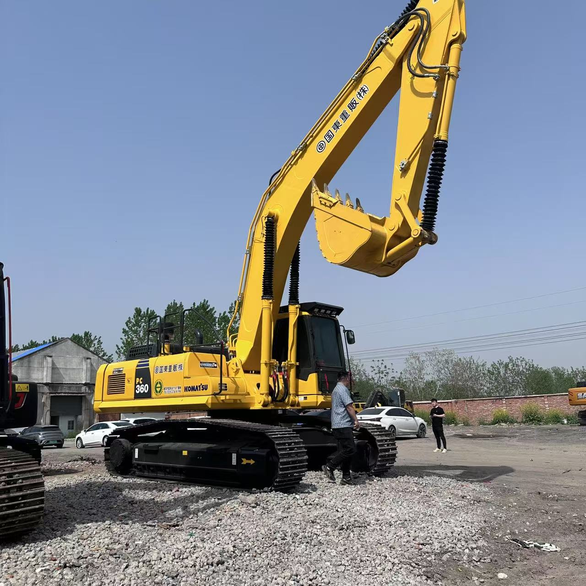

Refurbished Komatsu PC360 Excavator
The Komatsu PC360 is a high-performance hydraulic crawler excavator designed for a wide range of heavy-duty applications, from large-scale construction to mining and earthmoving. Known for its impressive power, advanced features, and exceptional durability, the PC360 remains a popular choice for professionals who require reliability and versatility in demanding environments.
Honestly, it's almost impossible to buy a brand new excavator from China. They either don't exist or are made in China. If a Chinese seller tells you their Caterpillar/Komatsu/Volvo/Kobelco/Hitachi is brand new, they're lying. Therefore, a refurbished excavator is your best bet.

Here are the detailed specifications for a refurbished Komatsu PC360LC-10 or PC360LC-11 excavator:
Operating Weight and Dimensions
- Operating Weight: 34,000–36,000 kg
- Overall Length: ~11.2–11.5 meters
- Overall Width: ~3.2 meters
- Overall Height: ~3.3–3.4 meters
- Tail Swing Radius: ~3.5 meters
- Ground Clearance: ~500 mm
- Track Width: 600–800 mm standard
Engine and Powertrain
- Engine Model: Komatsu SAA6D114E-5 (Tier 3) or SAA6D114E-6 (Tier 4 Final)
- Rated Power Output: ~257–271 hp (192–202 kW) @ 1,950–2,000 rpm
- Maximum Torque: ~1,050–1,100 Nm
- Fuel Tank Capacity: ~580 liters
- Travel Speed: 3.4–5.5 km/h
- Swing Speed: ~9.5 rpm
- Gradeability: Up to 70% (35°)
Hydraulic System
- Main Pump Type: Closed Center Load Sensing (CLSS) axial piston pumps
- Flow Rate: ~2 × 280 L/min
- System Pressure: Up to 34.3 MPa
- Hydraulic Oil Capacity: ~300 liters
- Boom Cylinder Bore: ~150 mm
- Arm Cylinder Bore: ~130 mm
- Bucket Cylinder Bore: ~120 mm
Performance Metrics
- Bucket Capacity: 1.4–2.1 m³ (SAE heaped)
- Max Digging Depth: ~7.6–7.8 meters
- Max Reach (Horizontal): ~11.2–11.5 meters
- Max Dump Height: ~7.4–7.6 meters
- Bucket Digging Force: ~210–220 kN
- Arm Digging Force: ~170–180 kN
Cab and Operator Features
- Cab Type: ROPS/FOPS certified
- Display: High-resolution LCD monitor with diagnostics and Eco guidance
- Controls: Electro-hydraulic joysticks with customizable sensitivity
- Comfort: Heated air suspension seat, climate control, low vibration cab
- Visibility: Rear-view camera, LED work lights, wide glass area
Smart Features and Efficiency
- Fuel Efficiency: Variable speed matching + auto idle shutdown
- Emissions Control:
- Tier 3 units: No DPF/SCR
- Tier 4 Final units: DPF + SCR + EGR
- Telematics Ready: KOMTRAX system for remote diagnostics and fleet tracking
- Attachment Memory: Preset hydraulic settings for multiple tools
Attachments Compatibility
- Standard Bucket: 1.4–2.1 m³
- Optional Tools: Hydraulic breaker, demolition shear, compactor, ripper
- Quick Coupler: Hydraulic or manual options available
Refurbishment Scope
Refurbished PC360 units typically include:
- Engine Overhaul: Turbocharger, injectors, seals, DPF cleaning (if applicable)
- Hydraulic Restoration: Pump recalibration, valve block testing, hose replacement
- Electrical Diagnostics: Monitor, sensors, wiring harness
- Cab Reconditioning: Seat, joysticks, HVAC, repainting
- Structural Repairs: Boom/bucket welding, bushing replacement, undercarriage rebuild
Overview of the Komatsu PC360 Excavator
The Komatsu PC360 is a 36-ton class hydraulic crawler excavator, engineered to provide outstanding digging power, smooth operation, and versatility in various applications. Whether you're involved in excavation, lifting, material handling, or grading, the PC360 excels in a wide range of tasks.
Key Specifications of the Komatsu PC360 Excavator
-
Operating Weight: 36,000 kg (79,366 lbs)
-
Engine Power: 205 kW (275 hp)
-
Bucket Capacity: 1.3 to 2.0 cubic meters
-
Max Digging Depth: 7.0 meters (22.97 feet)
-
Max Reach: 10.8 meters (35.4 feet)
-
Travel Speed: 5.4 km/h (3.4 mph)
With these impressive specifications, the PC360 is a reliable and efficient choice for contractors and operators seeking a versatile excavator for demanding work sites.
Key Features of the Komatsu PC360 Excavator
Powerful Engine for Heavy-Duty Tasks
The Komatsu PC360 is powered by a 205 kW engine, delivering superior performance for large-scale tasks. This powerful engine provides the machine with ample digging and lifting power, ensuring high productivity in construction, mining, and infrastructure projects.
-
Fuel-Efficient Engine: Despite its strength, the PC360 is designed to operate efficiently, reducing fuel consumption and helping lower operational costs.
-
High Torque and Low Emissions: The engine is designed to provide high torque at low speeds, offering enhanced digging and lifting capabilities while complying with stringent emissions standards.
Advanced Hydraulic System for Smooth Operation
Komatsu's advanced hydraulic technology ensures that the PC360 operates smoothly even in tough conditions. The load-sensing hydraulics adjust the hydraulic flow and pressure depending on the load, providing more precise control and reducing fuel consumption.
-
Improved Control: Operators can expect smooth, responsive movements even in challenging conditions, improving safety and efficiency on the job site.
-
Durability: Komatsu’s high-performance hydraulic system is built to handle heavy-duty work over extended periods, enhancing the machine's lifespan and performance.
Enhanced Stability and Durability
The Komatsu PC360 is equipped with a heavy-duty undercarriage designed to provide stability on uneven surfaces, ensuring the machine remains steady during operations.
-
Wide Tracks: The tracks are designed to distribute the machine's weight evenly, providing better traction and reducing ground pressure, which is essential for working on soft or uneven terrains.
-
Reinforced Components: The undercarriage is designed to withstand the rigors of tough jobs, offering superior wear resistance and extended service life.
Operator Comfort and Advanced Safety
Komatsu has always focused on enhancing operator comfort and safety, and the PC360 is no exception. The spacious cabin is designed with ergonomics in mind, ensuring operators can work long hours without experiencing fatigue.
-
Ergonomic Design: The cabin features an adjustable seat, user-friendly controls, and optimal visibility, reducing operator stress and increasing productivity.
-
Safety Features: The machine is equipped with advanced safety features such as anti-slip platforms, front and rear cameras, and a structural ROPS cabin, ensuring the operator's safety in every condition.
Why Choose a Refurbished Komatsu PC360 Excavator?
Purchasing a refurbished Komatsu PC360 provides the best of both worlds: top-tier performance at a more affordable price. Here are the reasons why opting for a refurbished model is a smart business decision:
Cost-Effective Solution
A refurbished Komatsu PC360 can save you a substantial amount compared to buying a new machine. Refurbished excavators often come at a fraction of the cost of new ones, offering a budget-friendly solution without compromising on quality.
-
Significant Cost Savings: A refurbished PC360 can cost up to 30-40% less than a new machine, allowing businesses to allocate their budget to other important investments.
-
Financing Options: Many dealers offer financing options for refurbished machinery, making it easier to add a high-quality machine to your fleet without straining your finances.
Thorough Refurbishment Process
Before being sold, a refurbished Komatsu PC360 undergoes a comprehensive refurbishment process to restore it to like-new condition.
-
Engine Overhaul: The engine is inspected and overhauled, ensuring it performs like new.
-
Hydraulic System Restoration: The hydraulic system is carefully examined, and any worn-out components are replaced, ensuring efficient and smooth operation.
-
Undercarriage Inspection: The tracks, rollers, and sprockets are thoroughly checked and replaced if necessary to ensure stability and durability.
-
Electrical System Repair: The electrical components, including wiring, sensors, and controls, are inspected and replaced to ensure the machine operates at optimal levels.
This extensive process guarantees that the refurbished PC360 is ready to perform at its best for years to come.
Proven Reliability and Durability
Komatsu excavators are known for their reliability and durability, and the PC360 is no exception. After undergoing a thorough refurbishment process, the machine continues to deliver high performance, providing years of reliable service even in demanding environments.
-
Long Lifespan: With proper maintenance, a refurbished PC360 will offer many more years of service, delivering excellent return on investment.
-
Komatsu Reputation: Komatsu is a trusted name in the heavy equipment industry, known for building machines that stand the test of time. A refurbished Komatsu PC360 continues to uphold this legacy.
Environmental Benefits
Choosing a refurbished excavator is a more sustainable option compared to buying a new machine. Refurbishment helps minimize the need for raw materials and reduces waste, contributing to environmental conservation.
-
Reduced Carbon Footprint: Refurbishing an excavator instead of manufacturing a new one helps reduce carbon emissions associated with production.
-
Eco-Friendly Option: By purchasing a refurbished machine, you're helping to reduce environmental impact while still obtaining high-performance equipment.
Maintenance Tips for the Komatsu PC360 Excavator
To keep your Komatsu PC360 running smoothly and efficiently, it's essential to follow a regular maintenance routine. Here are some helpful tips:
Engine and Hydraulic System Maintenance
-
Change the engine oil regularly and replace the filters to ensure proper engine function.
-
Check hydraulic fluid levels and ensure that the hydraulic filters are replaced when needed.
-
Inspect the cooling system to ensure the radiator and cooling fans are functioning properly to avoid overheating.
Undercarriage and Tracks
-
Regularly inspect the tracks for wear and ensure proper tension to prevent uneven wear.
-
Lubricate the undercarriage regularly to minimize friction and ensure smoother operation.
-
Check for leaks around the hydraulic cylinders and pumps to prevent any loss of hydraulic pressure.
Cabin and Operator Comfort
-
Maintain the cabin by cleaning it regularly and ensuring that air conditioning and heating systems are working properly.
-
Check the seat adjustment to ensure comfort and minimize operator fatigue.
-
Inspect safety features such as cameras and sensors to ensure they are in proper working order.
Conclusion
The Komatsu PC360 is a highly versatile and powerful excavator, designed to excel in a variety of heavy-duty applications. With its strong engine, advanced hydraulic system, and durable undercarriage, the PC360 offers reliability and high performance for the most demanding jobs.
A refurbished Komatsu PC360 allows businesses to take advantage of this top-tier machine at a lower price point. After undergoing a comprehensive refurbishment process, the machine will continue to deliver excellent performance for years, making it a wise investment for companies looking for an affordable yet high-performing excavator. With regular maintenance, a refurbished PC360 will continue to perform efficiently and reliably, ensuring great returns for any project.
Our Commitment
- 2 years / 4000 hours warranty.
- EPA certified.
- No sweatshop labor.
Contacts

- [email protected]
- Youtube Instagram Facebook
- Navigation: G206 (Sishu Bridge) in Changfeng County, Hefei City, Anhui Province, 200 meters north to the east